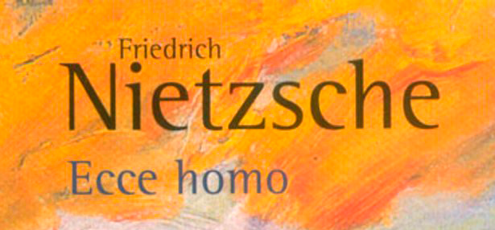

Biblioteca Digital
Descarga las obras completas de Arthur Schopenhauer, Friedrich Nietzsche y Fiódor Dostoyevski.
Watch ⏩ The Fantastic Flying Books of Mr. Morris Lessmore



Descarga las obras completas de Arthur Schopenhauer, Friedrich Nietzsche y Fiódor Dostoyevski.